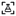
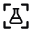
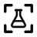
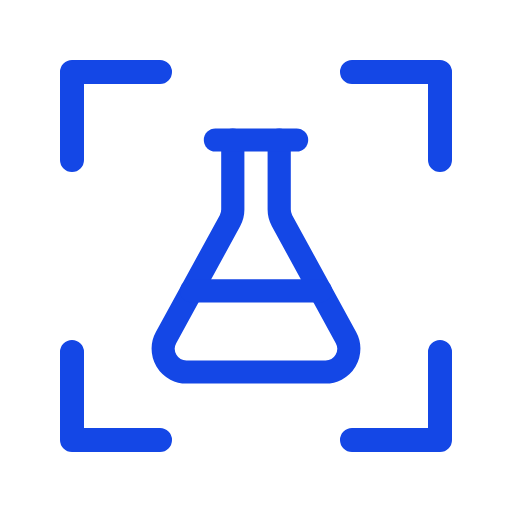

Everything in this pack, at a glance. Generated from one geometry — see README.md.
Mark
Each file below sits on the ground it was made for, whatever theme you are reading this in.
The dark ground leads here on purpose: the product is called NightLab, and that is the ground
it will be seen on most.
nightlab-mark.svgswitches itselfnightlab-mark-dark.svgfor light groundsnightlab-mark-light.svgfor dark groundsnightlab-mark-accent.svgbrand colournightlab-mark-light.svgknocked out of the accentnightlab-mark-dense.svg20px and below
Lockups
nightlab-lockup.svg271×64nightlab-lockup-light.svgsame lockup, for dark groundsnightlab-lockup-stacked.svg204×119, for square spaces
At true size
Shown at the pixel sizes they ship at, not scaled up. The three favicons are the dense contour; the 64px one is the regular.

favicon-16.pngdense

favicon-32.pngdense

favicon-48.pngdensenightlab-mark-64.pngregular
Raster
nightlab-mark-512.pngavatars, wherever SVG is refusednightlab-mark-light-512.pngfor dark grounds

nightlab-mark-accent-512.pngbrand colourapple-touch-icon-180.pngiOS home screen